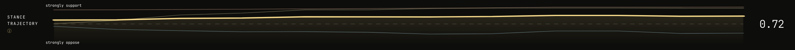
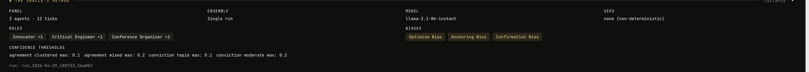

Pythia
A multi-agent simulation that shows you how stakeholders react to a decision, before you make it.
Who am I?
Utkarsh Bajaj (UB).
Amazon. AI Builder.

What is Pythia?
Pythia is a solo passion project. Solo full-stack, built for fun, built to answer a question that kept bothering me.
Decision making. Play it out before making it.
You describe a decision in plain English. Pythia spawns a panel of agents, each with a persona, a cognitive bias, and relationships to the others. They argue tick by tick. You watch the stances shift, the arguments land, the coalitions form, before a single real dollar or hour gets committed.
Plain English in
No schema, no form. One LLM call turns the prompt into a typed blueprint.
Agents with teeth
16 cognitive biases, an influence graph, and memory that compresses as it grows.
Self correcting
Coherence evaluator, Temple of Learning, amended rules, re-run.
Why Pythia?
Before we even get to LLMs, the real question is: why simulate at all?
1. Why simulations
Every decision has second-order effects you cannot talk your way through in a meeting. Simulation is how engineers stress-test bridges, how epidemiologists model outbreaks, how pilots train for failure modes. The point is to surface the dynamics you would otherwise discover the expensive way, after committing.
2. Why LLMs are good at this
The hard part of human simulation used to be authoring believable personas with internally consistent reasoning. LLMs do that natively. Give one a persona, a bias, a history, and a world state, and it will reason in character across hundreds of ticks. This used to take a research team.
3. What makes Pythia robust
An LLM improvising personas drifts. Pythia pins it down. Every bias comes from a canonical catalog with scientific citations. Every stance passes through a mechanical correction function. Every run is evaluated for coherence, and incoherent agents get rewritten before they re-enter. The LLM is the actor. The engine is the director.
4. Different from asking the best LLM to roleplay
Asking GPT-4 to "simulate six stakeholders" gives you one voice doing six impressions. In Pythia, each agent is its own prompt, its own memory, its own bias, reasoning in parallel against last tick's world. They disagree because they actually have different contexts. Then ensemble mode runs the whole thing three times so you see where the system is stable and where it is fragile.

→ Live demo
Watch a decision play out: agents spawn, argue, shift, and settle. Oracle Loop shows self-correction across runs.

Stance graphsdocs/assets/demo-graphs.png

Method reportdocs/assets/demo-method.png